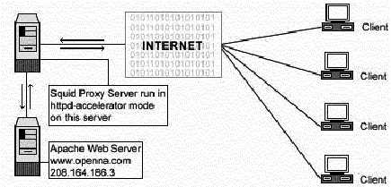
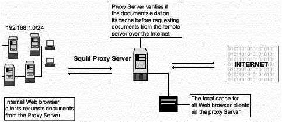
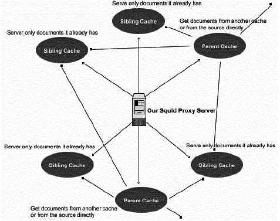

L
i n u x P a r
k
при
поддержке ВебКлуба |
Глава 18 Серверное программное обеспечение (Прокси сервис) (Часть
1)В этой главе
Прокси сервер
Squid
Использование
библиотеки GNU malloc для улучшения производительности Squid
Конфигурации
Организация
защиты Squid
Оптимизация
Squid
Утилита
cachemgr.cgi
Конфигурация
Netscape для работы с прокси сервером Squid
|
 |
Краткий обзор.
Прокси сервера, с их способностью к экономии полосы
пропускания, улучшения безопасности, улучшения скорости веб-серфинга, становятся
все более и более популярными. В настоящее время на рынке есть только несколько
программных прокси-серверов. Они имеют два основных недостатка: они коммерческие
и не поддерживают ICP (ICP используется для обмена информации о наличии URL в
соседнем кэше). Squid – это лучший выбор для кэширующего прокси-сервера, так как
он надежный, бесплатный и поддерживает ICP.
Производный от “кэширующего” программного обеспечения
ARPA-funded Harvest research project, разработанного в National Laboratory for
Applied Network Research and funded by the National Science Foundation, Squid
предлагает высокопроизводительное кэширование для веб клиентов, он также
поддерживает FTP, Gopher и HTTP объекты данных. Squid хранит часто используемые
объекты в RAM, поддерживает надежную базу данных объектов на диске, имеет
комплексных механизм контроля доступа и поддерживает SSL протокол для
посредничества в безопасных соединениях. В дополнение к этому, он поддерживает
иерархические связи с другими прокси-серверами, базирующимися на Squid.
В нашем случае мы настроим Squid на запуск, как
httpd-акселератора для лучшей производительности нашего веб-сервера. В режиме
акселератора, Squid выступает как обратный кэширующий прокси: он принимает
запросы клиентов, если это возможно, то удовлетворяет их из кэша, а если не
возможно, то организует запросы к оригинальному серверу для которого выступает
как обратный прокси. Также, мы покажем конфигурацию Squid, как кэширующего
прокси-сервера, которая позволит всем пользователям вашей корпоративной сети
использовать Squid для доступа в Интернет.
Эти инструкции предполагают.
Unix-совместимые
команды.
Путь к исходным кодам “/var/tmp” (возможны другие
варианты).
Инсталляция была проверена на Red Hat Linux 6.1 и 6.2.
Все шаги
инсталляции осуществляются суперпользователем “root”.
Squid версии
2.3.STABLE2
Пакеты.
Домашняя страница Squid: http://www.squid-cache.org/
FTP сервер Squid: 204.144.128.89
Вы должны
скачать: squid-2.3.STABLE2-src.tar.gz
Тарболы.
Хорошей идеей будет создать список файлов
установленных в вашей системе до инсталляции Squid и после, в результате, с
помощью утилиты diff вы сможете узнать какие файлы были установлены.
Например,
До инсталляции:
find /* >
Squid1
После инсталляции:
find /* >
Squid2
Для получения списка установленных файлов:
diff Squid1 Squid2 > Squid-Installed
Раскройте тарбол:
[root@deep /]#
cp squid-version.STABLEz-src.tar.gz /var/tmp
[root@deep /]# cd
/var/tmp
[root@deep tmp]# tar xzpf
squid-version.STABLEz-src.tar.gz
Настройка и оптимизация.
Шаг 1
Прокси-сервер Squid не должен запускаться из под пользователя
root, и по этой причине мы создаем специального пользователя, не имеющего
оболочки, для запуска Squid.
[root@deep /]#
useradd -d /cache/ -r -s /dev/null squid >/dev/null 2>&1
[root@deep
/]# mkdir /cache/
[root@deep /]# chown -R squid.squid /cache/
Первое, мы добавляем пользователя “squid”. Затем создаем
каталог “/cache”, если этот каталог не существует. В заключении, мы изменяем
владельца каталога “cache” на “squid”.
ЗАМЕЧАНИЕ. Обычно мы не нуждаемся в выполнении команды
(mkdir /cache/), потому что мы уже создали этот каталог, когда разбивали наш
жесткий диск при инсталляции Linux. Если этот раздел не существует, мы должны
выполнить эту команду для создания каталога.
Шаг 2
Переместитесь в новый каталог Squid и выполните следующие
команды на вашем терминале:
Редактируйте файл Makefile.in (vi +18 icons/Makefile.in) и
измените следующие строки:
DEFAULT_ICON_DIR =
$(sysconfdir)/icons
Должна быть:
DEFAULT_ICON_DIR = $(libexecdir)/icons
Мы изменили переменную (sysconfdir) на (libexecdir). Благодаря
этому, каталог “icons” будет размещаться в “/usr/lib/squid”.
Редактируйте файл Makefile.in (vi +34 src/Makefile.in) и
измените следующие строки:
DEFAULT_CACHE_LOG =
$(localstatedir)/logs/cache.log
Должна быть:
DEFAULT_CACHE_LOG = $(localstatedir)/log/squid/cache.log
DEFAULT_ACCESS_LOG =
$(localstatedir)/logs/access.log
Должна быть:
DEFAULT_ACCESS_LOG =
$(localstatedir)/log/squid/access.log
DEFAULT_STORE_LOG =
$(localstatedir)/logs/store.log
Должна быть:
DEFAULT_STORE_LOG = $(localstatedir)/log/squid/store.log
DEFAULT_PID_FILE =
$(localstatedir)/logs/squid.pid
Должна быть:
DEFAULT_PID_FILE = $(localstatedir)/run/squid.pid
DEFAULT_SWAP_DIR =
$(localstatedir)/cache
Должна быть:
DEFAULT_SWAP_DIR = /cache
DEFAULT_ICON_DIR =
$(sysconfdir)/icons
Должна быть:
DEFAULT_ICON_DIR = $(libexecdir)/icons
Мы изменили месторасположение принятое по умолчанию для файлов
“cache.log”, “access.log” и “store.log” на каталог “/var/log/squid”. Затем, мы
разместили pid файл для Squid в каталоге “/var/run”, и в заключении, разместили
каталог “icons” в “/usr/lib/squid/icons”.
Если вы страдаете от ограничения памяти на вашей системе, то
производительность кэша Squid будет пониженной. Для решения этой проблемы, вы
можете связать Squid с внешней библиотекой malloc, такой как GNU malloc. Чтобы
Squid использовал GNU malloc как внешнюю библиотеку выполните следующие
шаги:
Пакеты
Домашняя страница GNU malloc: http://www.gnu.org/order/ftp.html
Вы должны скачать:
malloc.tar.gz
[root@deep /]# cp malloc.tar.gz
/var/tmp
[root@deep /]# cd /var/tmp
[root@deep tmp]# tar xzpf
malloc.tar.gz
Шаг 1
Компилируйте и инсталлируйте GNU malloc на вашей системе
выполнив следующие команды:
[root@deep tmp]# cd
malloc
[root@deep malloc]# export CC=egcs
[root@deep malloc]#
make
Шаг 2
Копируйте файл “libmalloc.a” в каталог с вашими системными
библиотеками под именем “libgnumalloc.a”.
[root@deep malloc]# cp libmalloc.a
/usr/lib/libgnumalloc.a
Шаг 3
Копируйте файл “malloc.h” в каталог с системными заголовочными
файлами под именем gnumalloc.h”.
[root@deep
malloc]# cp malloc.h /usr/include/gnumalloc.h
Squid автоматически определит файлы “libgnumalloc.a” и
“gnumalloc.h” и будет использовать их для улучшения производительности кэша.
Компиляция и оптимизация
Шаг 1
Перейдите в каталог с исходными кодами Squid и введите
следующие команды на вашем терминале:
CC="egcs"
\
CFLAGS="-O9 -funroll-loops -ffast-math -malign-double -mcpu=pentiumpro
-march=pentiumpro -fomit-frame-pointer -fno-exceptions" \
./configure
\
--prefix=/usr \
--exec-prefix=/usr \
--bindir=/usr/sbin
\
--libexecdir=/usr/lib/squid \
--localstatedir=/var
\
--sysconfdir=/etc/squid \
--enable-delay-pools
\
--enable-cache-digests \
--enable-poll \
--disable-ident-lookups
\
--enable-truncate \
--enable-heap-replacement
Эти опции говорят Squid:
- Использовать delay pools для ограничения и контроля использования полосы
пропускания пользователями.
- Использовать Cache Digests для улучшения времени ответа клиентам и
использования сети.
- Использовать poll() вместо select(), так как это предпочтительней чем
select.
- Отключить ident-lookups для удаления кодов, которые выполняют Ident (RFC
931) lookups и уменьшить возможность denial-of-service.
- Разрешить усекание, чтобы осуществить некоторое улучшение в
производительности при удалении файлов.
- Использовать возможность Squid, называемую heap-replacement, чтобы иметь
возможность выбора различных вариантов алгоритма замены кэша вместо
стандартного алгоритма LRU для улучшения производительности. Смотрите ниже для
более детального объяснения.
Шаг 2
Сейчас, мы должны скомпилировать и инсталлировать Squid на
сервере:
[root@deep squid-2.3.STABLE2]# make -f
makefile
[root@deep squid-2.3.STABLE2]# make install
[root@deep
squid-2.3.STABLE2]# mkdir -p /var/log/squid
[root@deep squid-2.3.STABLE2]# rm
-rf /var/logs/
[root@deep squid-2.3.STABLE2]# chown squid.squid
/var/log/squid/
[root@deep squid-2.3.STABLE2]# chmod 750
/var/log/squid/
[root@deep squid-2.3.STABLE2]# chmod 750
/cache/
[root@deep squid-2.3.STABLE2]# rm -f /usr/sbin/RunCache
[root@deep
squid-2.3.STABLE2]# rm -f /usr/sbin/RunAccel
[root@deep squid-2.3.STABLE2]#
strip /usr/sbin/squid
[root@deep squid-2.3.STABLE2]# strip
/usr/sbin/client
[root@deep squid-2.3.STABLE2]# strip
/usr/lib/squid/dnsserver
[root@deep squid-2.3.STABLE2]# strip
/usr/lib/squid/unlinkd
[root@deep squid-2.3.STABLE2]# strip
/usr/lib/squid/cachemgr.cgi
Команда “make -f” будет компилировать все исходные файлы в
исполняемые двоичные, “make install” будет инсталлировать все исполняемые и
сопутствующие им файлы в необходимые места. Команда “mkdir” создаст новый
каталог “squid” под каталогом “/var/log”. Команда “rm -rf” удалит каталог
“/var/logs”, так как этот каталог был создан для храннеия файлов регистрации,
связанных со Squid, которые были перемещены в каталог “/var/log/squid”. Команда
“chown” изменит владельца “/var/log/squid” на пользователя squid, и “chmod”
изменит права доступа к каталогам “squid” и “cache” (0750/drwxr-x---) из
соображений безопасности. Заметим, что мы удаляем небольшие скрипты “RunCache” и
“RunAccel”, которые запускают Squid в режиме кэширования или акселератора, так
как мы используем лучший скрипт “squid” расположенный в каталоге
“/etc/rc.d/init.d/”. Команда “strip” уменьшит размер двоичных файлов для
оптимизации их производительности.
Очистка после работы[root@deep /]# cd /var/tmp
[root@deep tmp]# rm -rf
squid-version/ squid-version.STABLEz-src.tar.gz
[root@deep tmp]# rm -rf
malloc/ malloc.tar.gz (если вы используете внешнюю библиотеку GNU
malloc)
Команды “rm” будет удалять все файлы с исходными кодами,
которые мы использовали при компиляции и инсталляции Squid и GNU malloc. Также
будут удалены сжатые архивы Squid и GNU malloc из каталога “/var/tmp”.
Все программное обеспечение, описанное в книге, имеет
определенный каталог и подкаталог в архиве “floppy.tgz”, включающей все
конфигурационные файлы для всех программ. Если вы скачаете этот файл, то вам не
нужно будет вручную воспроизводить файлы из книги, чтобы создать свои файлы
конфигурации. Скопируйте файлы связанные с Squid из архива, измените их под свои
требования и поместите в нужное место так, как это описано ниже. Файл с
конфигурациями вы можете скачать с
адреса:
http://www.openna.com/books/floppy.tgz
Для запуска Squid в режиме httpd-акселератора следующие файлы
должны быть созданы или скопированы на ваш сервер.
Копируйте squid.conf в каталог “/etc/squid/”.
Копируйте
squid в каталог “/etc/rc.d/init.d/”.
Копируйте squid в каталог
“/etc/logrotate.d/”.
Для запуска Squid в режиме кэширующего прокси-сервера следующие
файлы должны быть созданы или скопированы на ваш сервер.
Копируйте squid.conf в каталог “/etc/squid/”.
Копируйте
squid в каталог “/etc/rc.d/init.d/”.
Копируйте squid в каталог
“/etc/logrotate.d/”.
Вы можете взять эти файлы из нашего архива floppy.tgz.
Конфигурация файла “/etc/squid/squid.conf” для режима
httpd-акселератора
Файл “squid.conf” используется для установки и конфигурирования
всех опций для вашего прокси-сервера Squid. В конфигурационном файле приведенном
ниже, мы будем настраивать Squid на работу в режиме httpd- акселератора. В этом
режиме, если Веб сервер запущен на том же сервере где Squid, то вы должны
настроить демон на порт 81. В случае с веб сервером Apache, вы можете сделать
это назначив вместо 80 порта 81 в файле “httpd.conf”. Если Веб-сервер запущен на
других серверах вашей сети, вы можете оставить тот же номер порта (80) для
Apache, так как Squid подключен на другом IP адресе, где порт (80) не
используется.

Редактируйте файл squid.conf (vi /etc/squid/squid.conf) и
добавьте/измените следующие опции:
http_port 80
icp_port 0
acl QUERY urlpath_regex cgi-bin \?
no_cache deny QUERY
cache_mem 16 MB
cache_dir ufs /cache 200 16 256
emulate_httpd_log on
redirect_rewrites_host_header off
replacement_policy GDSF
acl all src 0.0.0.0/0.0.0.0
http_access allow all
cache_mgr [email protected]
cache_effective_user squid
cache_effective_group squid
httpd_accel_host 208.164.186.3
httpd_accel_port 80
log_icp_queries off
cachemgr_passwd my-secret-pass all
buffered_logs on
Эти опции обозначают следующее:
http_port 80
Опция “http_port” определяет номер порта
на котором Squid слушает HTTP запросы клиентов. Если вы установите его в 80, у
клиента будет создаваться иллюзия, что он соединяется с веб сервером Apache. Так
как мы запускаем Squid в режиме акселератора, мы должны слушать 80 порт.
icp_port 0
Опция “icp_port” определяет номер порта на
который Squid будет посылать и принимать ICP запросы от соседних кэшей. Мы
должны установить эту опцию в 0, чтобы отключить эту возможность, так как мы
настраиваем Squid для работы в режиме акселератора для Веб сервера. Возможность
ICP нужна только в многоуровневых кэш окружениях с несколькими братскими и
родительскими кэшами. Использование ICP в режиме акселератора будет добавлять
нежелательные издержки в работе Squid.
acl QUERY urlpath_regex cgi-bin \? и no_cache deny
QUERY
Опции “acl QUERY urlpath_regex cgi-bin \? и no_cache deny QUERY”
используются для того, чтобы некоторые объекты никогда не кэшировались, например
файлы и каталога “cgi-bin”. Эта функция безопасности.
cache_mem 16 MB
Опция “cache_mem” определяет
количество памяти (RAM) используемое для кэширования таких вызовов: In-Transit
objects, Hot Objects, Negative-Cached objects. Это оптимизационная возможность.
Важно заметить, что Squid может использовать намного больше памяти, чем значение
этого параметра, и из этих соображений, если вы имеете для Squid 48 MB, вы
должны здесь выделить 48/3 = 16 MB.
cache_dir ufs /cache 200 16 256
Опция “cache_dir”
определяет по порядку: тип используемой системы хранения (ufs), имя каталога для
кэша (/cache), объем дискового пространства выделяемый под этот каталог (200
Mbytes), число подкаталогов первого уровня, создаваемых в каталоге кэша (16
Level-1), и число подкаталогов второго уровня создаваемых под каждым
подкаталогом первого уровня (256 Level-2). В режиме акселератора, эта опция
напрямую связана с размером и количеством файлов, которое вы хотите обслуживать
вашим Веб сервером Apache.
emulate_httpd_log on
Опция “emulate_httpd_log”, если
установлена в “ON”, определяет, что Squid должен эмулировать формат файлов
регистраций веб сервера Apache. Это очень полезно если вы хотите использовать
программы третьих разработчиков, подобные Webalizer, для анализа файлов
регистраций веб сервера (httpd).
redirect_rewrites_host_header off
Опция
“redirect_rewrites_host_header”, если установлена в “OFF”, говорит Squid не
переписывать любые хосты: заголовки в перенаправленных пакетах. Здесь
рекомендуется установить значение “OFF”, если вы запускаете Squid в режиме
акселератора.
replacement_policy GDSF
Опция “replacement_policy”
определяет политику кэша Squid, используемую для определения, какие объекты в
кэше должны быть заменены, когда прокси нужно освободить дисковое пространство.
Политика Squid LRU используется по умолчанию, если вы во время компиляции не
определили опцию “--enable- heap-replacement”. В нашей конфигурации, мы выбрали
GDSF (Greedy-Dual Size Frequency), как политику по умолчанию. Смотрите http://www.hpl.hp.com/techreports/1999/HPL-1999-69.html и http://fog.hpl.external.hp.com/techreports/98/HPL-98-173.html
для большей информации.
acl all src 0.0.0.0/0.0.0.0 and http_access allow
all
Опции “acl” и “http_access” определяют списки доступа применяемые на
прокси сервере Squid. Наш “acl” и “http_access” не ограничивающие, они позволяют
всем соединяться с прокси сервером, так как мы используем его для ускорения
работы публичного веб сервера Apache. Смотрите вашу документацию по Squid для
получения большей информации об использовании Squid в режиме кэширования.
cache_mgr admin
Опция “cache_mgr” определяет почтовый
адрес администратора отвечающего за работоспособность прокси сервера Squid. Этот
человек будет получать почту, если при работе Squid возникнут проблемы. Вы
можете задать имя или полный почтовый адрес.
cache_effective_user squid и cache_effective_group
squid
Опции “cache_effective_user” и “cache_effective_group” определяют
UID/GID, под которыми будет запущен кэш. Не забудьте, никогда не запускайте
Squid как “root”. В нашей конфигурации мы используем UID “squid” и GID
“squid”.
httpd_accel_host 208.164.186.3 и httpd_accel_port
80
Опции “httpd_accel_host” и “httpd_accel_port” определяют IP адрес и
номер порта реального HTTP сервера (например, Apache). В нашей конфигурации,
реальный HTTP Веб сервер имеет адрес 208.164.186.3 (www.openna.com) и порт (80).
“www.openna.com” это другой сервер в нашей сети, и так как прокси сервер Squid
не находится на одном компьютере с Веб сервером Apache, мы используем порт (80)
для нашего прокси сервера и порт (80) для Apache веб сервера.
log_icp_queries off
Опция “log_icp_queries”
определяет хотите ли вы регистрировать ICP (ICP используется для обмена
информации о наличии в соседних кэшах URL-ов) запросы в файл “access.log” или
нет. Так как мы не используем ICP в режиме акселератора, мы можем спокойно
установить ее в “OFF”.
cachemgr_passwd my-secret-pass all
Опция
“cachemgr_passwd” определяет пароль, который будет требоваться для доступа к
операциям из утилиты “cachemgr.cgi”. Эта CGI утилита создана для запуска через
веб интерфейс и вывода статистических данных о конфигурации и работе Squid.
<my-secret-pass> - это пароль, который вы выбрали, ключевое слово
<all> определяет, что он будет один и тот же для всех действий доступных
из этой программы. Смотрите раздел “Утилита cachemgr.cgi”, приведенный ниже в
этой главе для получения большей информации.
buffered_logs on
Опция “buffered_logs”, если
установлена в “ON”, может немного увеличить скорость записи некоторых файлов
регистрации. Это оптимизационная возможность.
Конфигурация файла “/etc/squid/squid.conf” для режима кэширующего
прокси
Внеся небольшие изменения в файл “squid.conf”, используемый для
запуска Squid как http-акселератор, мы запустим его как кэширующий прокси
сервер. Если Squid запущен как кэширующий прокси сервер, все пользователи вашей
корпоративной сети смогут использовать его для доступа в интернет. В этой
конфигурации, мы будем иметь полный контроль над проходящим трафиком и сможем
определять политику просмотра, доступа и выкачивания. Вы также сможете
контролировать использование полосы пропускания, времени соединения и т.д.
Кэширующий прокси сервер может быть настроен на запуск как автономный сервер
вашей корпорации или использование разделяемой иерархии кэшей с другими
серверами в Интернет.
В первом примере, приведенном ниже, мы покажем как настроить
Squid как автономный сервер, а затем немного поговорим о конфигурации
иерархических кэшей, где два или более серверов кооперируются для предоставления
документов друг другу.

Редактируйте файл squid.conf (vi /etc/squid/squid.conf) и
добавьте/измените следующие опции для запуска кэширующего прокси сервера, как
автономного сервера:
http_port 8080
icp_port 0
acl QUERY urlpath_regex cgi-bin \?
no_cache deny QUERY
cache_mem 16 MB
cache_dir ufs /cache 200 16 256
redirect_rewrites_host_header off
replacement_policy GDSF
acl localnet src 192.168.1.0/255.255.255.0
acl localhost src 127.0.0.1/255.255.255.255
acl Safe_ports port 80 443 210 119 70 21 1025-65535
acl CONNECT method CONNECT
acl all src 0.0.0.0/0.0.0.0
http_access allow localnet
http_access allow localhost
http_access deny !Safe_ports
http_access deny CONNECT
http_access deny all
cache_mgr [email protected]
cache_effective_user squid
cache_effective_group squid
log_icp_queries off
cachemgr_passwd my-secret-pass all
buffered_logs on
Большие отличия от конфигурации для режима httpd-акселератора
вносит использование списков контроля доступа (ACL). Эта возможность позволяет
ограничивать доступ базируясь на исходном IP адресе (src), IP адресе получателя
(dst), исходном домене, домене назначения, времени и т.д. Много типов контроля
существует благодаря этой возможности и вы должны посмотреть оригинальный файл
“Squid.conf” для получения полного списка. Ниже приведены четыре основных
типа:
acl имя тип данные
| | | |
acl some-name src a.b.c.d/e.f.g.h # ACL на основе IP адреса отправителя
acl some-name dst a.b.c.d/e.f.g.h # ACL на основе IP адреса получателя
acl some-name srcdomain foo.com # ACL на основе имени домена отправителя
acl some-name dstdomain foo.com # ACL на основе имени домена назначения
Как пример, ограничим доступ к вашему прокси серверу только
вашими внутренними клиентами и определим диапазон портов к которым можно
обращаться:
acl localnet src
192.168.1.0/255.255.255.0
acl localhost src 127.0.0.1/255.255.255.255
acl
Safe_ports port 80 443 210 119 70 21 1025-65535
acl CONNECT method
CONNECT
acl all src 0.0.0.0/0.0.0.0
http_access allow
localnet
http_access allow localhost
http_access deny
!Safe_ports
http_access deny CONNECT
http_access deny all
Эти acl будут разрешать доступ всем внутренним клиентам из
диапазона приватных адресов класса C 192.168.1.0; также разрешается доступ с IP
адреса localhost (специальный IP адрес используемый для доступа к самому себе).
Затем мы выбираем диапазон портов (80=http, 443=https, 210=wais, 119=nntp,
70=gopher и 21=ftp), к которым внутренние клиенты могут обращаться, мы запрещаем
метод CONNECT для предотвращения попыток подключения внешних пользователей к
прокси серверу, и в заключении мы запрещаем доступ со всех IP адресов.
Многоуровневое Веб кэширование
Второй метод работы кэширующего прокси это так называемый
“Multi-level Web Caching”, при котором вы сотрудничаете с большим числом других
кэшей в Интрнет. В этом случае ваша организация использует кэши других прокси
серверов и другие сервера используют ваш кэш. Следует заметить, что в этой
ситуации, кэширующие прокси играют две различные роли в иерархии. Они могут быть
настроены, как кэши, имеющие одного “родителя” (sibling) и иметь возможность
выдавать документы, которые уже имеют, или настроены как родительские сервера и
иметь возможность брать документы из других кэшей или непосредственно с
серверов.

ЗАМЕЧАНИЕ. Хорошей стратегией для предотвращения
большого сетевого трафика при отсутствии веб кэширования будет настройка
несколько sibling кэшей и только небольшого числа родительских кэшей.
Настройка скрипта “/etc/rc.d/init.d/squid” для всех типов конфигураций
Настроим ваш скрипт “/etc/rc.d/init.d/squid” для запуска и
остановки кэширующего прокси сервера Squid. Это скрипт изменит установки кэша
подкачки на “/cache” вместо “/var/spool/squid”.
Создайте скрипт squid (touch /etc/rc.d/init.d/squid) и добавьте
в него:
#!/bin/bash
# squid Этот скрипт отвечает за запуск и остановку
# Squid Internet Object Cache
#
# chkconfig: - 90 25
# описание: Squid - Internet Object Cache. Internet object caching – это путь
# для хранения запрошенных объектов из Интернет (например, данные
# доступные через протоколы HTTP, FTP и gopher) на системах находящихся
# ближе к требуемым серверам, чем организатор запроса. Веб броузеры могут
# затем использовать локальный кэш как прокси HTTP сервер, сокращая
# время доступа и сохраняя полосу пропускания.
# pid файл: /var/run/squid.pid
# конфигурационный файл: /etc/squid/squid.conf
PATH=/usr/bin:/sbin:/bin:/usr/sbin
export PATH
# Библиотека исходных функций.
. /etc/rc.d/init.d/functions
# Исходная сетевая конфигурация.
. /etc/sysconfig/network
# Проверка, что сеть работает.
[ ${NETWORKING} = "no" ] && exit 0
# проверка наличия конфигурационного файла squid
[ -f /etc/squid/squid.conf ] || exit 0
# определения имени двоичного файла squid
[ -f /usr/sbin/squid ] && SQUID=squid
[ -z "$SQUID" ] && exit 0
# определения cache_swap каталога
CACHE_SWAP=`sed -e 's/#.*//g' /etc/squid/squid.conf | \
grep cache_dir | sed -e 's/cache_dir//' | \
cut -d ' ' -f 2`
[ -z "$CACHE_SWAP" ] && CACHE_SWAP=/cache
# опции squid по умолчанию
# -D отключение проверки dns при инициализации. Если вы скорее всего
# не будете иметь соединения с Интернет во время старта squid,
# раскомментируйте это
#SQUID_OPTS="-D"
RETVAL=0
case "$1" in
start)
echo -n "Starting $SQUID: "
for adir in $CACHE_SWAP; do
if [ ! -d $adir/00 ]; then
echo -n "init_cache_dir $adir... "
$SQUID -z -F 2>/dev/null
fi
done
$SQUID $SQUID_OPTS &
RETVAL=$?
echo $SQUID
[ $RETVAL -eq 0 ] && touch /var/lock/subsys/$SQUID
;;
stop)
echo -n "Stopping $SQUID: "
$SQUID -k shutdown &
RETVAL=$?
if [ $RETVAL -eq 0 ] ; then
rm -f /var/lock/subsys/$SQUID
while : ; do
[ -f /var/run/squid.pid ] || break
sleep 2 && echo -n "."
done
echo "done"
else
echo
fi
;;
reload)
$SQUID $SQUID_OPTS -k reconfigure
exit $?
;;
restart)
$0 stop
$0 start
;;
status)
status $SQUID
$SQUID -k check
exit $?
;;
probe)
exit 0;
;;
*)
echo "Usage: $0 {start|stop|status|reload|restart}"
exit 1
esac
exit $RETVAL
Сейчас, сделайте этот скрипт исполняемым и измените права
доступа:
[root@deep /]# chmod 700
/etc/rc.d/init.d/squid
Создайте символическую rc.d ссылку для Squid следующей
командой:
[root@deep /]# chkconfig --add
squid
По умолчанию скрипт squid не будет автоматически запускать
прокси сервер на Red Hat Linux, когда перезагружаете сервер. Вы можете изменить
это следующей командой:
[root@deep /]# chkconfig
--level 345 squid on
Запустите ваш новый прокси сервер Squid вручную:
[root@deep /]# /etc/rc.d/init.d/squid start
Starting
squid: init_cache_dir ufs... squid
Конфигурация файла “/etc/logrotate.d/squid”
Настроим ваш файл “/etc/logrotate.d/squid” для автоматической
ротации файлов регистраций каждую неделю.
Создайте файл squid (touch /etc/logrotate.d/squid) и добавьте в
него:
/var/log/squid/access.log {
weekly
rotate 5
copytruncate
compress
notifempty
missingok
}
/var/log/squid/cache.log {
weekly
rotate 5
copytruncate
compress
notifempty
missingok
}
/var/log/squid/store.log {
weekly
rotate 5
copytruncate
compress
notifempty
missingok
# This script asks squid to rotate its logs on its own.
# Restarting squid is a long process and it is not worth
# doing it just to rotate logs
postrotate
/usr/sbin/squid -k rotate
endscript
}